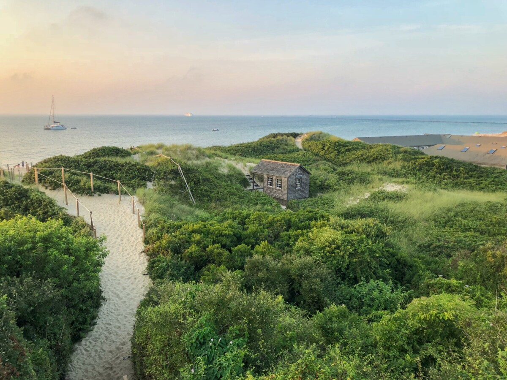
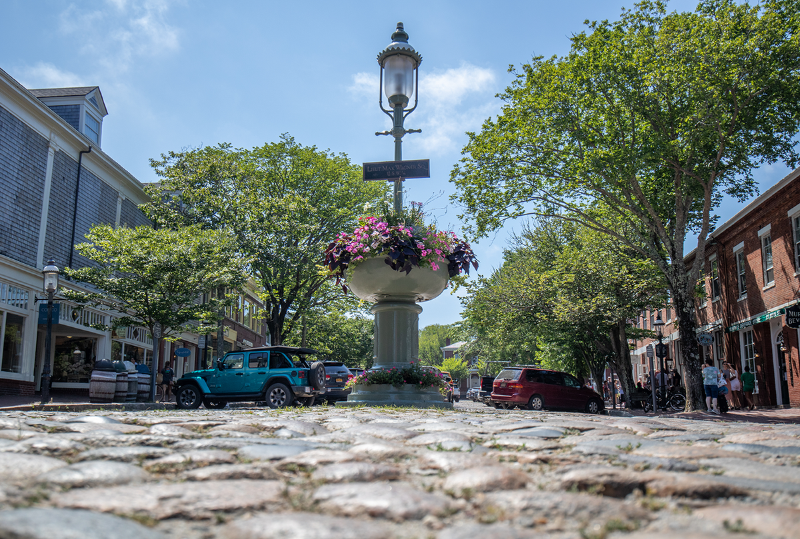
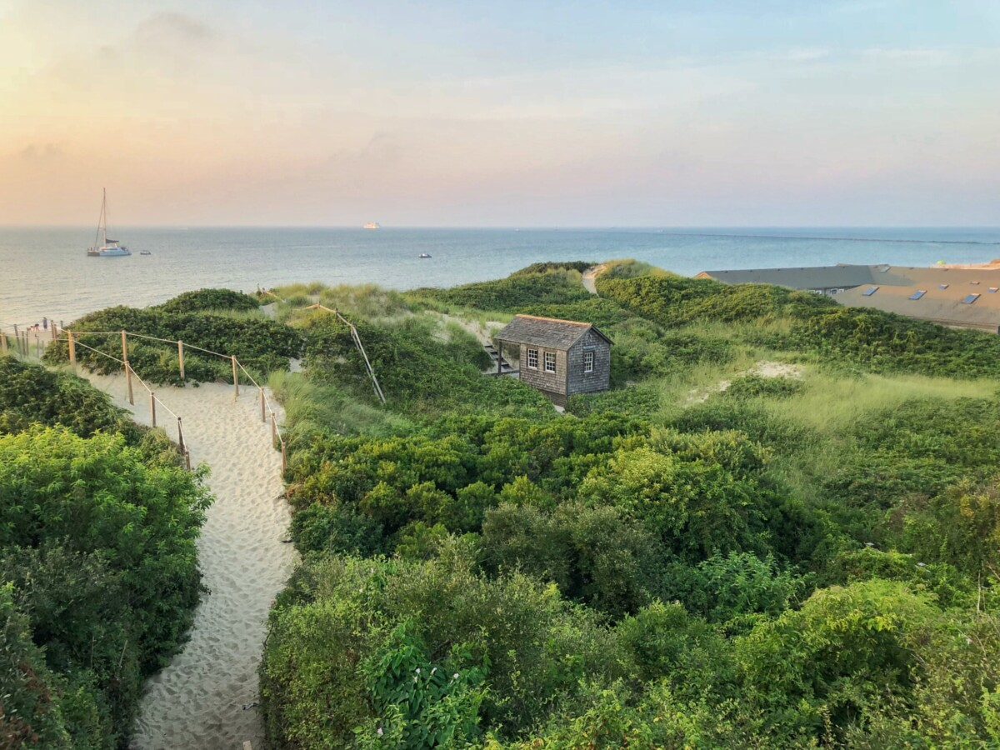
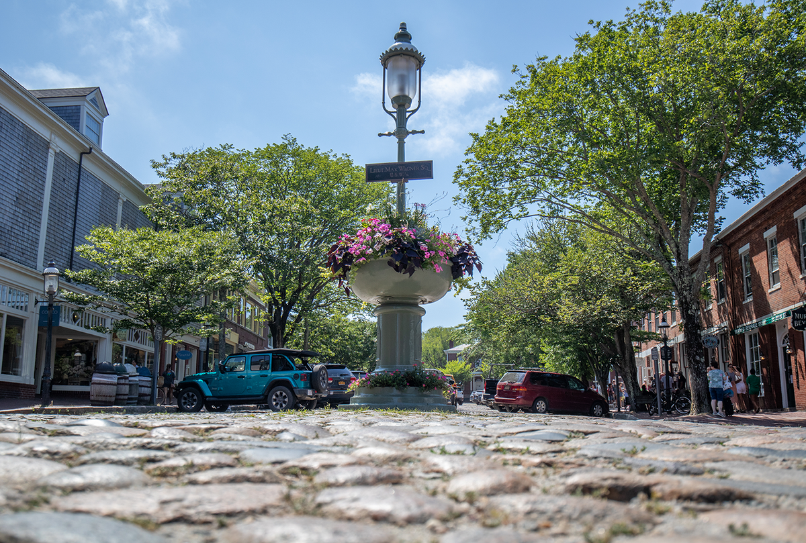
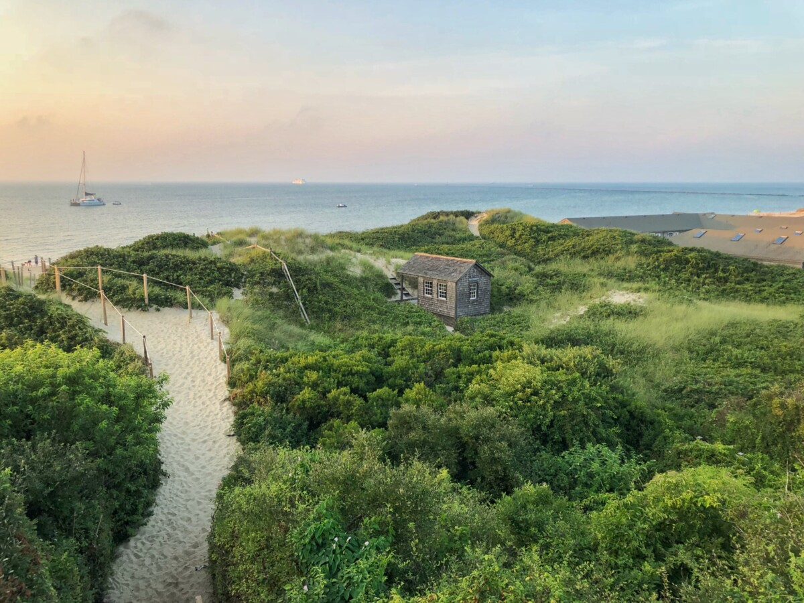
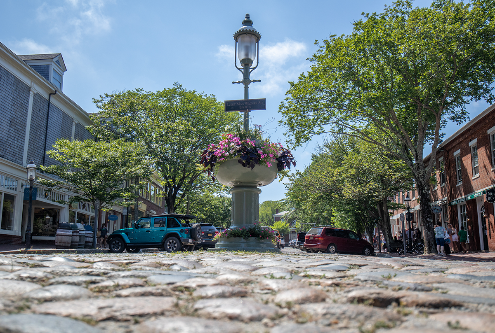

Nantucket, a tiny, isolated island off Cape Cod, Massachusetts, is a summer destination with dune-backed beaches. It’s marked by unpainted cedar-shingled buildings, many surrounded by manicured privets. The wharves and cobblestoned streets of the Town of Nantucket are lined with restaurants, high-end boutiques and steepled churches. The town’s Whaling Museum recounts the island’s role as a 19th-century whaling hub.
Book Now



Jetties beach is one of the most popular beaches on the island, conveniently located on the north shore just outside of town. Jetties is named for the large rock jetties that have been guiding ships into Nantucket harbor since their completion in 1911. It is a wide, flat beach with shallow water and generous sand bars at low tide.

Today, the Town of Nantucket joins communities across the country in celebrating Energy Efficiency Day, observed annually on the first Wednesday in October.

Introduced in the late 1880s, the Shingle style was intended to hark back to the simplicity of Colonial architecture and eschew the ornamentation, adornments, and embellishments of Queen Anne and Victorian home plan architecture, opting instead to be more rustic home plans